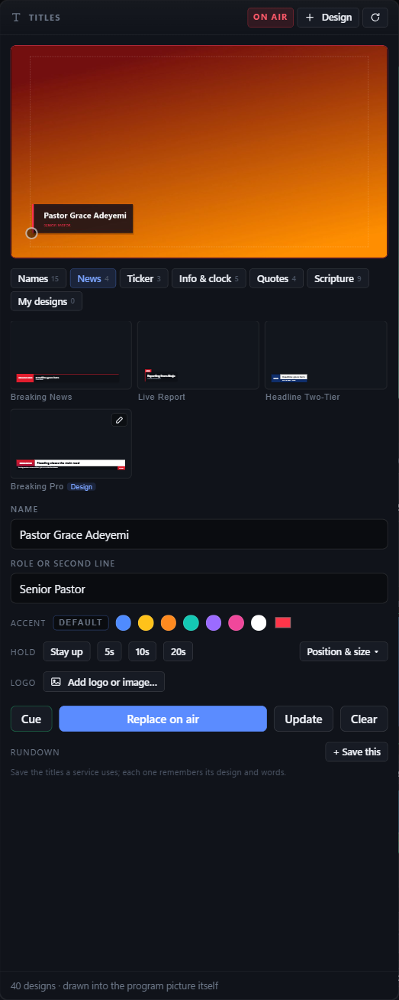
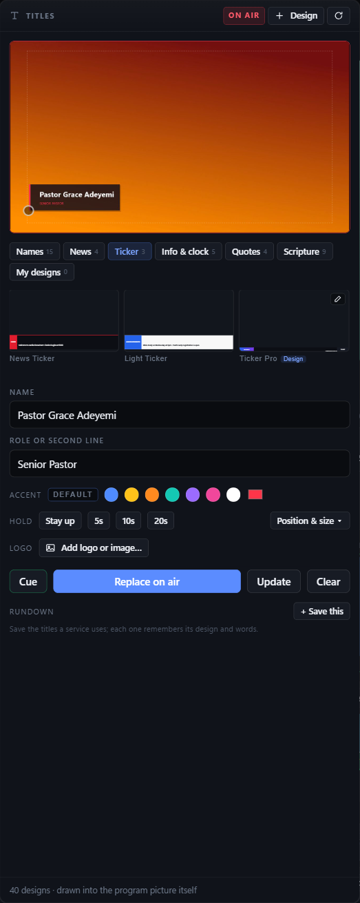
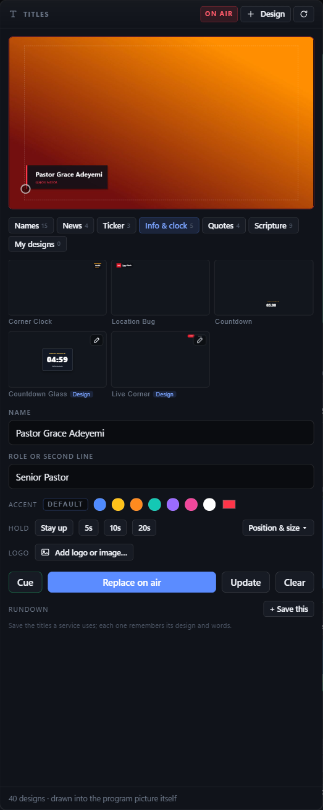
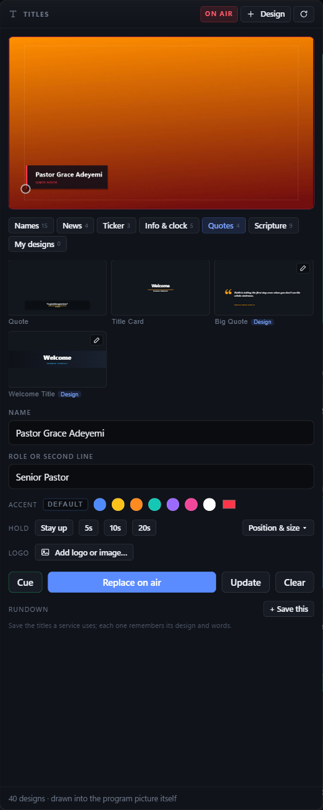
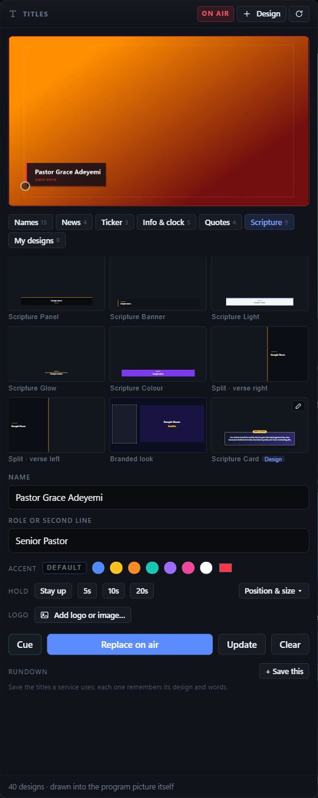
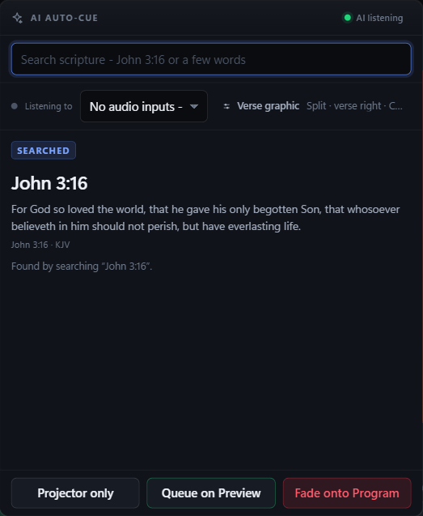
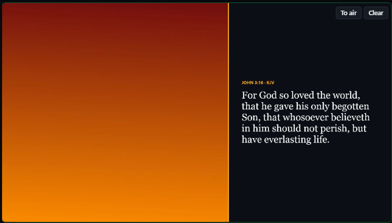
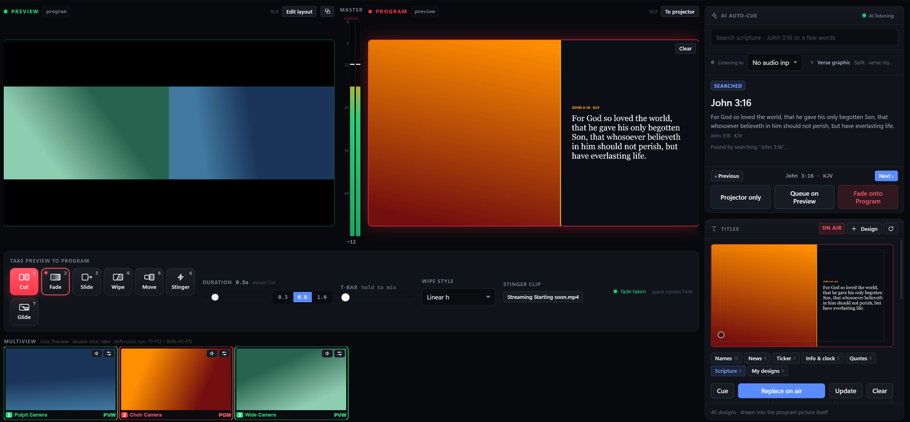

Tetra Mix — User Manual
Version 0.1.1 · Live production for churches, events and streamers
Tetra Mix is a live video switcher, graphics system, streaming encoder, recorder and presentation (slides, lyrics and scripture) system in one Windows application. This manual walks through everything the app can do, in the order you are likely to need it on the day.
Every picture in this manual is a real screenshot of Tetra Mix. The sample "cameras" in them are test videos.
1. Before you start
What you need
| Computer | Windows 10 or 11, 64-bit |
| Graphics | An NVIDIA graphics card gives the best experience (hardware video encoding and all AI features). AMD, Intel and CPU-only computers are also supported, with some AI features running more slowly. |
| Internet | For streaming, an upload speed comfortably above your stream's bitrate. The app can measure it for you (see section 13). |
| Optional | Cameras (USB, capture cards, Blackmagic DeckLink, NDI, phones), a microphone or audio interface, a projector or second screen, a MIDI controller or Stream Deck. |
First launch
When Tetra Mix starts, the logo spins while the video engine (the part that actually mixes the video) starts up. When the status bar at the bottom says Video engine ready, you can work.
The first time, the app asks what you will use it for — Church, Events, Education or General. This only changes the words the app uses (for example "Service" or "Event", "Sermon points" or "Key points"), and hides features you won't need (such as the Bible panel outside Church mode). You can change it at any time from the top bar.
System check
Open the command palette (Ctrl+K) and run System check to confirm your graphics card, driver and encoder are supported. Each area — Switching, GPU encoding and AI features — gets a clear verdict.
2. A tour of the screen
Tetra Mix has two workspaces, switched with the tabs at the top left:
- Switcher (Ctrl+1) — cameras, mixing, graphics, audio and outputs.
- Presentation (Ctrl+2) — the service or event running order, songs, slides, scripture and the projector.
Both stay running when you switch between them, so nothing you have prepared is lost.
The top bar
From left to right:
| Item | What it does |
|---|---|
| Switcher / Presentation | Switch workspace. |
| Setup name (e.g. Untitled setup) | Your saved show. Click it to save, open or import a setup (section 21). The dot shows unsaved changes. |
| ON AIR · … badge | Appears when a graphic (title, verse, lyric) is over the Program picture. It says CUED (blue) when the graphic is only waiting on Preview. Click it to clear the graphic. |
| OFF AIR / ON AIR 00:00 | Whether you are streaming, and for how long. |
| Audio | Opens the audio mixer as a drawer (useful from the Presentation workspace). |
| Monitor icon | Video settings: resolution, frame rate, stream bitrate. |
| Phone icon | Remote control for phones, tablets and Stream Deck. |
| Church / Events / … | What the app is used for (changes wording). |
| English / Yorùbá | Language of the app. |
| Ctrl K | Command palette — search for any action. |
| Keyboard icon | Keyboard shortcut map (?). |
| ⓘ | About Tetra Mix: version, feedback, support, licences. |
The status bar
The thin bar at the bottom shows engine health, and the computer's CPU, RAM, GPU and VRAM use. Hover over the figures for a breakdown per process. On the right it reminds you of the most useful keys for the workspace you are in.
The Switcher layout
| Area | Contents |
|---|---|
| Left column | Scenes (saved looks) above Inputs (every camera, video, picture, etc.). |
| Centre | Preview (green, what you are preparing) and Program (red, what is on air) monitors, the Master audio meter between them, the transition bar, and the Multiview tiles. |
| Right column | AI Auto-cue above Titles. |
| Bottom band | Preview stage (layout builder), Vertical 9:16, Audio mixer, and the Operations dock (Outputs, Calls, Recording, Replay, Social, Macros, Captions, Cameras, Controllers). |
Every border between areas can be dragged to resize. Double-click a border to reset it, or run Reset panel layout from the command palette. Sizes are remembered on this computer.
3. Inputs: bringing in cameras, media and more
An input is anything that can be shown: a camera, a video file, a picture, a screen, a window, a phone, a document, a clock, a web page.
Loading cameras
Click Cameras at the top of the Inputs panel to bring in every connected camera at once. The number on the button shows how many cameras are connected; the tooltip says how many are not loaded yet.
Adding an input
Click + Add. The add sheet has five tabs:
Device
All input types available on this computer:
| Type | Use it for |
|---|---|
| Image | A still picture (PNG, JPG…). |
| Color | A plain colour background. |
| Image Slide Show | A folder of pictures shown in turn. |
| Browser | A web page (for web-based graphics or a live scoreboard). |
| Media | A video or audio file (MP4, MOV, MKV, 3GP, MP3…). Loops by default. |
| Text (GDI+) | Simple text. |
| VLC Video | A playlist of videos played through VLC. |
| Display Capture | A whole monitor. |
| Window Capture | One application window (see the Application tab for the easy way). |
| Game Capture | A full-screen game or program. |
| Video Capture Device | A webcam, capture card or USB camera. |
| Audio Input Capture | A microphone or audio interface. |
| Audio Output Capture | The sound coming out of this computer. |
| Application Audio Capture | The sound of one application only (beta). |
| NDI® Source | A camera or computer on the network sending NDI (needs the free NDI runtime). |
| WebRTC Camera | A camera sending over WebRTC/WHIP. |
| Blackmagic card | Blackmagic DeckLink capture cards appear here when one is installed. |
| Clock | Countdowns, timers and clocks (see below). |
When a type needs a device or a file, you choose it next.
Application
The quickest way to show PowerPoint, a browser, Zoom or any other program: pick the window from the list. Type in the filter box to find it, and tick Include minimised windows if the one you want is minimised (it captures black until you restore it).
Document
Click Choose files… and pick PDF, PowerPoint, Excel, Word or image files. Each one is converted once, on import, into pages you can step through and cut to like any other input. PowerPoint does not need to be running during the service.
Phone
Use any iPhone or Android phone as a wireless camera:
- In the browser (no app) — nothing to install; the camera runs in the phone's web browser. Type a camera name and click Add browser camera, then open the link it shows on the phone.
- With an app (best quality) — for the best picture over weak Wi-Fi. Each phone gets its own input and its own encrypted connection, and comes back by itself if it drops off the Wi-Fi. The app gives you a one-paste link for apps such as Larix Broadcaster, and a setup file for the Blackmagic Camera app.
Clock
Ready-made clocks for services and events:
- Service countdown — "Service begins in 05:00".
- Starts at a time — counts down to a time of day.
- Corner clock — the time of day in a corner.
- Sermon timer — a stopwatch for the speaker.
You can then fine-tune what it shows (countdown, countdown to a time, time of day, stopwatch), the minutes, a heading, text to show at zero (e.g. "Welcome!"), the look (full screen on its own background, a panel over the picture, or text only over the picture), size and colours. The engine keeps the clock running even if the window is closed.
After adding a clock, its settings (⚙) let you Pause, Restart, change the length or heading, and change look and position.
Working with inputs
Each input row shows:
- its number (used by the F-keys) and name;
- a PREVIEW or ON AIR label, and a coloured border, when it is on Preview (green) or Program (red);
- a live sound meter and a sound on/off button;
- for video files: play/pause, back to the start, stop, a position slider, loop on/off, and Start from the top on TAKE (so the video always begins at the start when it goes on air);
- Settings (sliders icon) — rename the input, change its file or device, and other options for its type;
- Remove (×).
Click an input to stage it on Preview. It is never put straight on air by a single click.
4. Mixing: getting pictures on air
This is the heart of Tetra Mix. It works like a professional broadcast switcher.
Preview and Program
- PREVIEW (green, left) is what you are preparing. Nobody watching sees it.
- PROGRAM (red, right) is what is on air: the stream, the recording, the projector when it shows Program, and any NDI or virtual camera output.
- MASTER between them is the level meter for the sound going out.
You build the next shot on Preview, then TAKE it to Program with a transition. After a take, what was on Program comes back to Preview, so pressing TAKE again swaps back.
Ways to put something on Preview
| How | Notes |
|---|---|
| Click an input in Inputs | |
| Click a Multiview tile | |
| F1–F12 | Stage input 1–12. |
| Click a Scene | Loads that saved look onto Preview. |
| Build a layout on the Preview stage | Picture-in-picture, side by side, etc. |
| Cue a title or verse | Graphics can wait on Preview too. |
Ways to take Preview to Program
| How | Result |
|---|---|
| Space or Enter | TAKE with the armed transition. |
| Click a transition button | Fires that transition. |
| Double-click a multiview tile | Stages that input and takes it with the armed transition. |
| Drag the T-bar | Mix by hand, at your own speed. |
| Shift+F1–F12 | Cut input 1–12 straight to Program (skips Preview). |
| Shift+click a multiview tile | Cut that input straight to Program. |
| From a phone in Operator mode | CUT or FADE buttons. |
| A macro, a MIDI pad or a Stream Deck button | See sections 19–20. |
| The AI director with auto-take on | See section 18. |
The transition bar
Transitions — press the number key to arm one (the armed one has a red outline), then Space takes it:
| Key | Transition | What it looks like |
|---|---|---|
| 1 | Cut | Instant change. |
| 2 | Fade | Cross-dissolve from one picture to the other. |
| 3 | Slide | The new picture slides in, pushing the old one out. |
| 4 | Wipe | A shaped edge sweeps across. The Wipe style list has 34 shapes: barn doors, blinds, boxes, burst, checkerboard, circles, clock, cloud, curtain, fan, fractal, iris, linear (horizontal, vertical, diagonal), zigzags, sine wave, spiral, squares, stripes, strips, watercolour and more. |
| 5 | Move | Items that are in both shots glide from their old place to their new one. |
| 6 | Stinger | A short animated video clip plays over the change (for example a logo sweep). Choose the clip under Stinger clip. The duration sets the cut point — how far into the clip the picture underneath changes. |
| 7 | Glide | Cuts to the new layout, then animates the boxes into place — a smooth picture-in-picture or side-by-side reveal. |
Duration — drag the slider or click 0.3, 0.5 or 1.0 seconds. (Cut is always instant.)
After a take, the bar briefly confirms it ("fade taken") and notes what Space will repeat.
The T-bar: mixing by hand
Drag the T-bar slider to mix between Preview and Program at your own pace. Let go part-way and the mix holds there — both pictures are blended on air, and the bar shows the percentage. Push to the end to complete the take; bring it back to the start to cancel. Right-click the T-bar for Take the held mix to air or Cancel the held mix. The T-bar is not available for Cut.
The Multiview
The Multiview shows a live tile for every video input. The input on Preview is outlined green (PVW); the one on Program is outlined red (PGM).
- Click — stage on Preview.
- Double-click — take to air with the armed transition.
- Shift+click — cut straight to air.
- Speaker icon — turn that input's sound on/off.
- Sliders icon — that input's audio settings.
- Right-click — a menu with all of the above.
Graphics over the mix
Graphics sit in layers on top of whatever camera shot is on Program, so you can change cameras freely without the graphics flickering or disappearing:
- Camera shot or layout (bottom)
- Lower third / verse / lyrics (titles)
- Social handles (they politely step aside while a lower third is up)
- Captions (top)
A graphic can be cued on Preview first and then go on air with the next TAKE, or be put straight to air over the current shot.
Sound follows the picture
By default each input's sound is AFV (audio follows video): it is heard only while that input is on Program, and it fades with the picture during a transition. Turn AFV off for inputs that must always be heard, such as the pulpit microphone (section 7).
Locked inputs (lock to the screen)
On the Preview stage, Lock an item (for example a logo, a sign-language interpreter or a scoreboard) and it stays on screen through every take — cut, fade or direct cut — until you unlock it.
"Edit layout" and the layout editor window
Click Edit layout above the Preview monitor to arrange the picture directly on the big Preview monitor, with the same handles and guides as the Preview stage. Click Done when finished.
The ⧉ button next to it opens the layout editor in its own window, so you can put it on a second screen.
5. Building layouts: the Preview stage
The Preview stage (bottom left) is where you compose multi-camera layouts — picture-in-picture, side by side, three up — and style each picture.
Quick layouts
The buttons along the top arrange the inputs on the stage instantly:
- Full — one input fills the screen.
- Side by side — two inputs next to each other.
- PiP — one input full screen with a small one in a corner.
- Three up — three inputs.
The chips under the stage list every input: + Name puts it on the stage, × Name takes it off.
Add object brings in a new camera, picture, video, window, document, phone or clock and places it on top of the current layout.
Arranging by hand
- Drag a box to move it; drag a handle to resize.
- Shift+click or drag a box around several to select more than one.
- Arrow keys nudge; Alt while dragging turns snapping off.
- Ctrl+Z / Ctrl+Y undo and redo.
- The alignment buttons line selected boxes up (left, centre, right, top, middle, bottom), spread them evenly, or make them the Same size.
Guide toggles under the stage:
| Toggle | What it shows |
|---|---|
| Snap | Edges and centres snap to guides and other boxes. |
| Thirds | Rule-of-thirds lines. |
| Grid | A 12-column grid. |
| Safe areas | Broadcast action-safe (93%) and title-safe (90%) frames. Keep text inside the inner one. |
| Rulers | Rulers in canvas pixels — drag out of them to make your own guides. |
| L3 area | Shades where a lower third usually sits, so a picture-in-picture doesn't end up under it. |
| Keep shape | Resizing keeps the box's proportions (hold Shift to resize freely). |
Layers and the item inspector
Layers lists the boxes top first. Click to select, drag to restack. A box hidden behind another is marked covered.
When a box is selected, the inspector below offers:
- Replace with… — swap the picture inside this box for another input, keeping the box where it is.
- Lock — keep this item on screen through every take (see section 4).
- Reset — undo the styling.
Then six sections:
Position & size
Exact X, Y, W, H in pixels or percent; Centre, Full frame, Fit box to picture, Fit; and layer order (Front, Forward, Backward, Back).
Crop & zoom
Pick a shape (Native, 16:9, 4:3, 1:1, 4:5, 9:16), then Zoom, Pan X/Y and Crop each edge. Push in makes a slow, smooth zoom — a classic "camera push" on a single camera.
Look
Corners (rounded), Border width and colour, Opacity, Shadow, Circle (round picture, great for a speaker in the corner), Card, and Blend mode (Normal, Screen, Multiply, Additive, Subtract, Lighten, Darken).
Colour & key
- Green screen — key out green, blue or magenta, with similarity, smoothness and spill reduction.
- Colour correction — brightness, contrast, saturation, gamma and hue.
- LUT — apply a colour look-up table file (.cube) to match a camera to a grade.
Clean-up & match
Clean up a noisy or soft camera: one-click Natural, Low light or Phone / stream presets, or set Denoise, Deblock, Sharpen, Exposure, Warmth and Tint by hand. Match camera steers this camera's exposure and white balance to match another camera. For interlaced (1080i) cameras there is Deinterlace, and Input range fixes washed-out or crushed blacks.
3D
Put the picture on a 3D plane. Presets: Flat, Turn left, Turn right, Card, Floor, Showcase; or set Turn, Tip, Roll, Size and Depth yourself. Add Motion (Still, Float, Swing, Spin), an Entrance (Flip in, Fly in, Rise up, Spin in — it plays each time the input goes on air, ▶ replays it), a soft Shadow and a moving Gloss. If the input is on Program, 3D changes show on air immediately.
6. Scenes: saved looks
A scene is a saved arrangement of inputs. Build the look on Preview, then press + in the Scenes panel and name it.
- Click a scene to load it onto Preview — never straight to air — then TAKE it.
- Each scene card has buttons to Update it from what is on Preview now, Duplicate it, or Delete it.
7. Audio mixing
The Audio mixer is always visible in the Switcher's bottom band, and opens as a drawer from the top bar's Audio button in either workspace.
Each input's strip
- Meter and fader — drag to set the level; double-click for 0 dB.
- On — the input is in the mix. Click to turn it off.
- AFV (audio follows video) — heard only while this input is on Program, and faded with it. Click to make the input independent (always heard while On). Use independent for microphones.
- Headphones — listen to this input in your headphones.
- Sliders — the processing chain (below).
The Headphones list at the top chooses which audio device you monitor on. 3/3 ON counts the inputs that are on.
Processing chain
Click the sliders icon on a strip. Processing runs top to bottom, is live, and is saved with the session.
Start from a preset, then fine-tune: Speech mic, Singer, Choir / room, Band / desk feed, Music & video, or No processing.
| Processor | What it does |
|---|---|
| Pan / Mono | Place the sound left–right; fold a one-sided mic to both sides. |
| Low cut | Removes rumble below the voice (stand thumps, air conditioning, traffic). 80–120 Hz for speech. |
| Noise suppression | Removes fans, hum and room noise from speech. |
| NVIDIA voice cleanup | AI noise removal (needs the free NVIDIA Broadcast audio effects runtime). |
| Noise gate | Closes the mic between words so a quiet room stays quiet. |
| Voice EQ | Four bands for clear speech. |
| EQ | Simple low/mid/high tone. |
| Gain | Boost or cut before the compressor. |
| Leveler | Lifts a speaker who steps back from the mic, without touching the loud parts. |
| Compressor | Evens out loud and soft speech. |
| De-esser | Softens harsh "s" and "sh" sounds. |
| Ducking | Dips this input while another one is speaking — put it on the music, keyed by the pastor's mic. |
| Limiter | A ceiling the stream never goes over. |
| Headphones | Off, Monitor only, or Monitor and stream. |
| Sync offset | Delays the sound to match a camera whose picture arrives late. |
Stream sound (the master)
The Stream sound card controls the final mix that goes to the stream and recording:
- The big number is the current loudness in LUFS, with average and peak.
- Choose a loudness target: −14 (YouTube, Facebook), −16 (podcasts, Apple) or −23 (broadcast TV).
- Auto level keeps the stream at that loudness automatically.
- Glue gently compresses the whole mix so it sounds together.
- Limiter makes sure the stream never clips.
- Reset returns the master to untouched.
Audio for remote guests
See Call return (mix-minus) in section 15.
8. Titles and lower thirds
The Titles panel puts names, news straps, tickers, clocks, quotes and scripture over the picture. Titles are drawn into the Program picture itself, so they appear on the stream, the recording and everywhere else.
Putting a name on screen
- Choose a category — Names, News, Ticker, Info & clock, Quotes, Scripture or My designs (your own).
- Click a design in the gallery.
- Type in the fields — for a name: Name and Role or second line. The small preview at the top shows the result; you can drag the title to place it there.
- Optionally choose an Accent colour, a Hold time (Stay up, 5 s, 10 s, 20 s), Position & size, and a Logo to sit beside the strap.
- Click: - Cue — put it on Preview, so it goes on air with the next TAKE; - Take to air — put it on Program now (it says Replace on air if another title is already up); - Update — change the words of the title already on air without taking it off; - Clear — take it off.
Rundown — + Save this stores the current title (with its design and words) in a list, so you can prepare every name for a service in advance and put each up with one click.
The ↻ button reloads the design list.
The categories
| Names | News | Ticker |
|---|---|---|
 |
 |
| Info & clock | Quotes | Scripture |
|---|---|---|
 |
 |
 |
The Title designer
Click + Design to create your own titles, or the pencil on a design to start from a copy.
Start from a blank canvas or a template (Glass Name, Gradient Strap, Modern Pill, Minimal Line, Social Handle, Breaking Pro, Ticker Pro, Countdown Glass, Live Corner and more). Your copy is yours; the original stays as it is.
- Add Text, Shape, Image, Clock or Ticker layers.
- Layers list (top first) — show/hide and lock each layer.
- Select a layer to edit it on the right:
- Content — the text, and a Field name. Fields become the boxes the operator types into (e.g. headline).
- Position & size, rotation, opacity, "hug the words" (plate grows with the text).
- Type — font, size, weight, colour (or accent), alignment, spacing, capitals, italic, wrap, soft shadow.
- Background — none, solid, gradient or radial; corners, padding, border, drop shadow, frosted glass.
- Motion — how it comes on and goes off (wipe, fade, slide…), delay, time and easing. ▶ Play previews it.
- Design → Accent: colours set to accent follow the colour the operator picks for each take, so one design suits every ministry.
- Behind shows the design over Program, a grid, dark or light.
- Save stores it in My designs; Templates reopens the start list; Undo/Redo; Ctrl+D duplicates a layer; Space plays.
9. AI Auto-cue: scripture and songs that follow the speaker
Auto-cue listens to a microphone and recognises, as people speak:
- scripture references ("John three sixteen", "first Corinthians thirteen"),
- verses quoted without a reference,
- songs in your library being sung.
It proposes the matching verse or lyric. Nothing reaches air until you choose an action (unless you switch on automatic mode).
Setting it up
At the top of the Auto-cue panel, set Listening to to the pulpit microphone. The dot shows live, selected-but-silent or off. The choice is remembered.
Searching by hand
Type a reference or a few words into Search scripture — e.g. John 3:16 or for God so loved — and pick the result.
Acting on a match
Each match shows the verse text, the reference and translation, and why it was found. Then choose:
- Projector only — show it on the screens in the room, not the stream.
- Queue on Preview — prepare it on Preview; the next TAKE puts it on air.
- Fade onto Program — put it on air now.
‹ Previous / Next › step through the neighbouring verses while it is up.
  
Verse graphic settings
Click Verse graphic at the top of the panel:
- Design — Branded look, Split · verse right, Split · verse left, Scripture Banner, Scripture Light, Scripture Glow, Scripture Colour, Scripture Panel.
- Colour — the design's own, or an accent colour.
- Second language — show the verse in two translations at once (for example English and Yorùbá). The primary translation is the one chosen in the Preacher panel.
- When a verse is read out — Off, Cue on Preview (ready on Preview the moment it is read; TAKE puts it on air), or Straight to air.
- Only when at least 70% / 80% / 90% sure.
- Keep it up — until replaced or cleared, or for 20 s, 40 s or 1 minute.
- Follow the singers — when a song is up, its words move to the verse or chorus being sung.
The Branded look
Choose Branded look and click Edit look… to design a full-screen scripture graphic in your church's style: a background image or looping video, a box showing the preacher's live picture, the verse panel, fonts, colours and logos. Drag the boxes; the corner resizes. Try on Preview shows it for real.
Tip: have frames, dates and decorations painted into one 1920×1080 background image — it is then exactly as designed.
10. Social handles
The Social tab of the Operations dock shows your social media handles in a corner of the picture, one at a time, on a schedule.
- Click Setup, then Add handle for each one — platform and handle (e.g. Instagram, @yourchurch).
- Choose a Style (Corner Badge, Inline Tag, Brand Pill, Bottom Strip, Light Card, Dark Pill, Spotlight, Broadcast Badge, Light Strip), a Position (any corner), Rotation (how long each handle stays: 5–15 s) and how often they Appear (every 3, 5 or 10 minutes, or always on).
- Leave Step aside while a lower third is on air ticked so they never clash with a name.
- Click Put on air. Apply text updates the words; Take off removes them; Restart starts the rotation again.
The dock's SOCIAL ON / REPEATING / OFF pip tells you the state at a glance.
11. Live captions
The Captions tab turns speech into subtitles, using the same speech recognition as auto-cue.
- On the picture — burnt into the Program picture.
- In stream & recording (CC) — as closed captions viewers can turn on or off.
- On the projector — for the room.
- Translation — show a translated line under the captions.
- Position (Bottom, moves up for lower thirds; Always bottom; Always top), Size and Background.
Finished sentences appear in the panel as they are spoken. Captions are also shown on paired phones and tablets (section 20).
12. Vertical 9:16 for TikTok, Reels and Shorts
The Vertical 9:16 panel makes a second, portrait version of your show at the same time as the landscape one.
- Click Turn on. (It uses extra graphics-card power while on — "off costs nothing".)
- Frame: 1080×1920 (9:16), 720×1280 (lighter), or 1080×1350 (4:5).
- Framing: Fill (crop to fill), Fit (whole picture with bars), or Manual with Zoom and Pan.
- Mirrors: Program (follows what is on air) or Preview (set the framing before the take).
Stream it to a platform as Portrait 9:16 (section 13) or record it (section 14).
13. Going live: streaming platforms
The Outputs tab of the Operations dock streams to one or several platforms at once.
Adding a platform
Click + Add platform and choose YouTube, Facebook, Twitch, Vimeo, Restream, X (Twitter), Instagram, TikTok, LinkedIn, Kick or Other… (any RTMP server).
Then:
- Name on this panel — e.g. "Church YouTube".
- Stream key — paste it from the platform (the form tells you where to find it). The server address is filled in for you. The key is saved encrypted to your Windows account on this PC and never shown again.
- Safety buffer — Off, 5, 10, 20, 30 or 60 seconds. Recommended: it rides out an internet dropout with nothing lost; viewers watch that far behind, and if the internet drops the stream picks up where it was cut instead of skipping.
- Picture — Landscape 16:9 (Program) or Portrait 9:16 (turn on the Vertical canvas first).
Going live
- Tick the platforms you want, then Go live — or Start a single platform.
- Test upload measures your upload speed first and tells you if it is enough ("needs about 6.7 Mbps upload").
- The top bar shows ON AIR and the elapsed time. Each platform shows its own state, and reconnects by itself if the connection drops.
- Edit or × (remove) a platform.
The stream bitrate is set in Video settings (section 22). A good rule: about 70% of your measured upload speed.
14. Recording and instant replay
Recording
The Recording tab records Program to a file on this computer.
- Record, Pause and Split (close this file and start the next one, without a gap).
- The timer, file size and free disk space are always shown.
Settings:
| Setting | Options |
|---|---|
| Recording folder | Browse…, Open folder. |
| Record | Video + audio, or Audio only (.aac). |
| From | Program (16:9) or the Vertical canvas (9:16). |
| Container | MKV or TS (survive a crash — recommended), MP4 or MOV (need a clean stop), FLV (one audio track only). |
| Audio tracks | 1–6 separate tracks (e.g. a clean mic track for editing). |
| Rate control | CQP (constant quality), CBR, VBR or Lossless; CQ level (lower = better) or video bitrate. |
| Stop below (MB free) | The disk guard: recording stops safely before the disk is full. |
| Replay buffer | How many seconds the replay buffer keeps. |
| Split into new files | Every N seconds or N MB. |
| Reuse the streaming encoder | Uses less graphics power, but if the internet struggles the recording's quality drops with the stream's. |
If you try to close Tetra Mix while a recording is still being written, the app refuses to close until it has finished, so you never lose the end of a recording.
Instant replay
The Replay tab keeps the last few seconds of Program so you can show a moment again.
- Arm the buffer (choose its length: last 5–60 seconds).
- When something happens, press ▶ REPLAY to play it on air, To Preview to prepare it, or Save only to keep the clip without playing it.
- Speed: normal, 75%, 50%, 33% or 25% slow motion.
- Return to the previous shot when it ends — the replay cuts back by itself.
- Clips are saved to the Replay folder and listed under Clips this session.
15. Calls, virtual camera and NDI output
The Call & Outputs tab sends your show to other programs and computers.
Virtual camera
Program as a webcam. In Zoom, Teams, Meet or WhatsApp, choose Tetra Virtual Camera as the camera. The first time, click Install camera (Windows asks for administrator permission once).
Call return (mix-minus)
What remote guests hear: the whole show except themselves, so they never hear an echo of their own voice. Send it to a virtual audio cable (such as the free VB-CABLE: choose "CABLE Input" here and "CABLE Output" as the microphone in the call app), then Start call return. Under Heard by callers, untick the call app's own sound (Zoom, Teams, WhatsApp… are unticked for you).
NDI® output
Send Program picture and sound over the network to another computer (vMix, OBS, NDI Studio Monitor) or an overflow screen. Click Start NDI.
16. The projector (the screens in the room)
Tetra Mix drives the projector or TV screens in the room separately from the stream: the projector is the room; the Program key is the stream. Clearing one never clears the other.
The projector can show:
- Slides — slides, lyrics and verses you send from the Presentation workspace;
- Program — the live mixed picture, full screen;
- Blank — black.
Switch between Slides and Program with Ctrl+Shift+P, the To projector button above the Program monitor, or the Slides / Program buttons in the Presentation workspace's Projector panel. The projector window opens full screen on your second display.
17. The Presentation workspace
The Presentation workspace runs the service or event: the running order, songs, slides, documents, scripture and the sermon or key points.
| Column | Contents |
|---|---|
| Left | Service clock and controls, Service Schedule (the running order), Songs library. |
| Centre | Slides, Preacher (Bible) and Sermon points tabs. |
| Right | Projector (what the room sees), Program key (what is keyed over the stream). |
The Service clock
Shows Elapsed time, the current Item time, and whether you are On time (ahead or behind, once you set item lengths). NOW and NEXT show the current and next item.
- Pre-roll — the countdown before you start.
- Go live — start the service clock. Macros with a Service moment trigger run at this point — for example, to start the stream and recording (section 19).
- During the service: Next item (N), Previous item (B), Pause / Resume the clock, End the service. Reset clears progress.
The Service Schedule
The running order for today. Add songs from the library with +, and documents (PDF, PowerPoint, Word, Excel, images) with + Document. Click an item to load its slides. For each item you can set a planned length (click the time; m or m:ss) — it drives the ahead/behind clock — and move or remove items.
Songs
- New — type a song: title, authors, CCLI number, copyright, and lyrics. Put a section name on its own line (Verse 1, Chorus, Bridge), then the words; a blank line starts the next section. Each section becomes one slide. Ctrl+Enter saves.
- Import — OpenLyrics/OpenLP (.xml), CCLI SongSelect (.txt) or plain text files.
- Search titles, authors or a remembered line.
- The pencil edits a song; + adds it to today's schedule.
Every song in the library is also recognised by Auto-cue (section 9).
Slides
Pick an item in the schedule and its slides appear as cards. Use ← → (or Page Up / Page Down) to step.
- Slide text — edit the words before you send (edits apply when you send).
- Send to Projector — show the selected slide in the room.
- Fade onto Program — key it over the stream.
- Design — the on-air look for slides and verses keyed over Program.
For a document item there are also Speaker on Preview (the speaker's camera alone) and Speaker + slides on Preview (camera and slides together), and an option to cue that layout automatically when the document item goes live.
Preacher (Church mode)
- Choose the translation — about 30, including KJV, NKJV, ESV, NLT, NASB, CSB, AMP, NIrV, WEB, ASV, Geneva, YLT and three Yorùbá Bibles (Bibeli Mimo, 2010 and 2014).
- Type a reference and press Go (or Ctrl+B from anywhere). Abbreviations and spoken forms work: jn3:16, 1cor 13, first john 1 9, ps 23.
- Follow — the preacher's own words bring you to the passage automatically.
- Transition to the screens — Cut, Fade through black, Dissolve, Rise, Push left/right, Wipe, Zoom, Soften; Duration.
- Verses/slide — 1, 2 or 3.
- Parallel translation — show a second translation (stacked or side by side; ⇅ swaps them).
- Send (Enter) puts the verse on the projector; ← → step verses; Program (Ctrl+Enter) keys it over the stream.
Sermon points / Key points
Paste the speaker's notes as a pack with New: one point per paragraph, with a blank line between them; start a paragraph with # Heading to name it. Click a point to put it on the projector or the stream, or turn on Follow and the speaker's own words select it.
Projector and Program key panels
The right column always shows both outputs: what the room sees (with Blank, Slides, Program) and what is keyed over the stream (with Clear).
18. Cameras: AI director, auto-framing and PTZ
The Cameras tab of the Operations dock.
Director — shot suggestions
The director watches who is speaking and suggests camera changes:
- Suggest shots — suggestions appear under the transition bar; accept or dismiss each one.
- Auto-take (armed) — let it take the shots itself, with Fade or Cut.
- Min shot (seconds) and Max cuts/min keep it from cutting too often.
- + Speaker — "when this mic clearly leads for 1.5 s, suggest this camera".
- Wide shot — go to a wide camera after N seconds of silence.
- + Item rule — per service item (e.g. "Worship" → choir camera).
- A counter shows suggestions made, accepted and declined.
Auto-framing
Choose a camera and press Follow: the picture is cropped smoothly to keep the person framed, like a camera operator. Loose ↔ Tight sets how close; Gentle ↔ Quick sets how fast it follows. One camera at a time.
PTZ cameras (VISCA)
+ Camera adds a PTZ camera that speaks VISCA over the network. Hold an arrow to move, release to stop. Presets: click to recall, Shift+click to store.
19. Macros: automating the routine
The Macros tab runs a list of steps with one key, at a time, or on an event.
Three ready-made macros are included: Start service (Ctrl+Shift+1), End service (Ctrl+Shift+0) and Pulpit look for the sermon (when the "Sermon" service item is taken). Click a macro to edit it, New to make one, Run to run it now.
- Trigger — Manual only, Hotkey, Engine event, Time of day, or Service moment.
- Steps — Cut, Fade, Stage input on Preview, Load saved scene, Wait, Wait for take to finish, Start/Stop recording, Start/Stop streaming, Show/Hide lower third, Next service item, Next slide, Load all cameras. Reorder with the arrows.
- Enabled — the macro can run.
- Armed — allowed to change what is on air. (A macro that is not armed cannot touch Program.)
- Cooldown — the minimum time between runs.
- Edit as JSON, duplicate and delete.
20. Remote control, MIDI and Stream Deck
Remote control from phones and tablets
Click the phone icon in the top bar.
- Tick Turn on remote control. Only this computer can connect until you also tick Let phones and tablets on this network connect. Use a staff Wi-Fi network, not guest Wi-Fi: the connection is only as private as your Wi-Fi.
- Choose a role and click Show pairing code: - Viewer — sees what is on air (Preview, Program and the live captions). Cannot change anything. - Presenter — also next/previous slide and service item. What a preacher's phone needs. - Operator — also CUT and FADE.
- On the phone, scan the QR code (or open the address shown and type the 6 digits) and give the device a name.
Every paired device is listed; you can change its role or revoke it at any time.
MIDI controllers and Stream Deck
The Controllers tab:
- MIDI controller — choose it (or Rescan), pick an action under Map a pad (TAKE, CUT, input N to Preview, cut input N, instant replay on air / to Preview, save a replay, clear titles and social handles, mute/unmute an input, next/previous slide), click Learn, then press the pad.
- Stream Deck / Bitfocus Companion — turn on Remote control and pair a device as Operator named "Stream Deck". Then copy a ready-made URL for each action and use it in a Stream Deck Website action ("GET request in background") or a Companion HTTP GET. Revoking the device switches its buttons off.
21. Setups: saving and opening a whole show
A setup saves the whole show: inputs, cameras, saved scenes, the auto-cue microphone and more. Click the setup name in the top bar.
- Save as setup… (Ctrl+S), Save as new… (Ctrl+Shift+S), Open (Ctrl+O), Import a setup file.
- Open cameras — whether opening a setup also opens its cameras.
- Each saved setup can be renamed, duplicated, exported, given notes, or deleted.
Tip: keep one setup per kind of event — "Sunday service", "Midweek", "Conference".
22. Settings, languages and use modes
Video settings
Click the monitor icon in the top bar.
- Resolution — e.g. 1920×1080 (1080p) or 1280×720.
- Frame rate — e.g. 30 or 60 fps.
- Stream bitrate (kbps) — changes the live stream at once. Use about 70% of your measured upload speed. Typical: 720p30 2500–4000, 1080p30 4500–6000, 1080p60 6000–9000.
Use modes
Choose Church, Events, Education or General in the top bar. The app's wording follows: for example "Service" becomes "Event", "Service Schedule" becomes "Running order", and "Sermon points" becomes "Key points"; the Preacher (Bible) panel appears only in Church mode.
Language
Choose English or Yorùbá in the top bar. The choice is per computer.
About
The ⓘ button: version, Report a problem, Ask a question or share an idea, Email us, Support Tetra Mix, and Licences and source code (the video engine is built on OBS Studio, GNU GPL v2; the source is included with the app).
23. Keyboard shortcuts and the command palette
Press ? to see the shortcut map at any time.
| Keys | Action |
|---|---|
| Ctrl+K | Command palette |
| Ctrl+1 / Ctrl+2 | Switcher / Presentation workspace |
| Ctrl+Shift+P | Projector: slides ↔ Program |
| ? | Shortcut map |
| Esc | Close an overlay / clear focus |
| 1–7 | Arm Cut, Fade, Slide, Wipe, Move, Stinger, Glide |
| Space or Enter | TAKE |
| F1–F12 | Stage input 1–12 on Preview |
| Shift+F1–F12 | Cut input 1–12 straight to Program |
| Double-click a tile | Take with the armed transition |
| Shift+click a tile | Cut straight to Program |
| → / PgDn | Next slide |
| ← / PgUp | Previous slide |
| N / B | Next / previous service item |
| Ctrl+B | Go to the Bible reference box |
| Enter / Ctrl+Enter | (Preacher) Send to projector / key over Program |
| Ctrl+S / Ctrl+Shift+S / Ctrl+O | Save setup / Save as new / Open |
| Ctrl+Z / Ctrl+Y | Undo / redo on the stage and in the designer |
| Ctrl+Shift+1 / Ctrl+Shift+0 | Start service / End service macros |
Bare keys (like Space and the numbers) are ignored while you are typing in a text box, so you can never fire a take by accident while typing a name.
The command palette
Ctrl+K opens a search box for every action in the app — transitions, staging any input, muting any input, titles, auto-cue actions, slides, projector, service clock, songs, setups, system check, and more. Type a few letters and press Enter. Actions that can't run right now are greyed out with the reason ("no slide staged").
24. Troubleshooting
| What you see | What to do |
|---|---|
| A red banner says VIDEO ENGINE NOT RESPONDING | If the engine has crashed, it restarts itself within a couple of seconds and a banner tells you when it is back. If it keeps happening, run System check and update your graphics driver. |
| A banner says Recording is losing frames | The graphics card can't keep up with everything at once. Lower the resolution or frame rate in Video settings, or turn off the Vertical canvas. |
| A banner says The stream stopped and is not back on air | The internet connection dropped for longer than the safety buffer. Check the connection; the platform reconnects by itself when it can, or press Start on it in Outputs. |
| "command queue is full - the engine is busy, try again" | Wait a moment and try again. |
| The Add button in Inputs is greyed out just after starting | The engine was still starting. Run Refresh the input list from the command palette (Ctrl+K). |
| A multiview tile or monitor says No signal | The input has no picture yet (camera closed, video ended, window minimised). For video files, turn Loop on. |
| Auto-cue doesn't react | Check Listening to at the top of the Auto-cue panel is set to the right microphone, and that its meter moves. |
| The app won't close | A recording is still being written. Wait for it to finish — the app closes by itself when it is safe. |
| Viewers hear an echo of remote guests | Use Call return (mix-minus) in Call & Outputs and untick the call app under Heard by callers. |
| NVIDIA voice cleanup is greyed out | Install the free NVIDIA Broadcast audio effects runtime, then restart the app. |
For anything else, use ⓘ → Report a problem.
25. Glossary
| Term | Meaning |
|---|---|
| Preview (PVW) | The shot you are preparing. Not seen by viewers. |
| Program (PGM) | What is on air: the stream, recording and outputs. |
| TAKE | Move Preview to Program with the armed transition. |
| Cut | An instant change of shot. |
| Armed | The transition that Space will use (red outline). For macros and the director: allowed to change what is on air. |
| AFV | Audio follows video: an input is heard only while its picture is on Program. |
| Key / keyed | A graphic laid over the Program picture. |
| Lower third | A name or caption strap in the lower part of the screen. |
| Multiview | The grid of small live pictures of every input. |
| Scene | A saved arrangement of inputs. |
| Setup | A saved whole show (inputs, scenes, settings). |
| PiP | Picture-in-picture: a small picture over a full one. |
| Stinger | A short animated clip that plays over a transition. |
| T-bar | The slider for mixing between Preview and Program by hand. |
| LUFS | A measure of loudness. Platforms expect about −14 LUFS. |
| Mix-minus | A mix that leaves out the person it is sent to, so they don't hear themselves. |
| NDI® | A standard for sending video over a computer network. |
| PTZ | Pan-tilt-zoom: a camera that can be moved remotely. |
| Safety buffer | Seconds of stream held back so an internet dropout loses nothing. |
| 9:16 | Portrait video, as used by TikTok, Reels and Shorts. |
NDI® is a registered trademark of Vizrt NDI AB. Tetra Mix's video engine is built on OBS Studio (GNU GPL v2). © 2026 TetraMos Technologies.